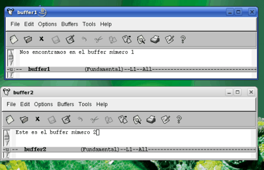
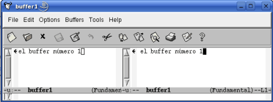
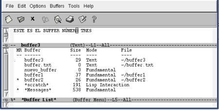
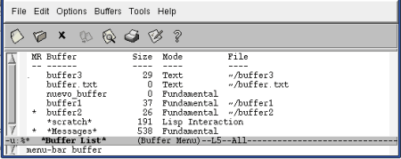

Como vimos en el capítulo anterior, [8.Buffers Múltiples], con Emacs se puede tener abierto más de un buffer al mismo tiempo. Dichos buffers pueden visualizarse en pantalla através de múltiples ventanas y marcos.
Antes de seguir se impone una precisión terminológica: Para Emacs, ventanas son porciones de ventana de Emacs. En otros términos, cada ventana es una porción de la GIU ( Interfaz Gráfica de Usuario ).
En cambio, los marcos son ventanas de Emacs (GIU,s) independientes.
Tanto las ventanas como los marcos son medios de visualizar un buffer, pudiendo contener o no un archivo.
Veamos un ejempo de dos buffers, buffer1 y buffer2 mostrados en dos ventanas y en dos marcos :
Los citados buffers mostrados en dos buffer1 y buffer2 : Cada uno de ellos ocupa una porción de la pantalla, (GUI), de Emacs.
Los mismos buffers mostrados através de marcos : Cada uno de ellos ocupa una pantalla, (GUI), de Emacs independiente.
|  |
Cuando se esté trabajando con varios buffers a la vez, la decisión de disponerlos en ventanas y/o en marcos dependerá, esencialmente, de las preferencias individuales.
Como se comentó más arriba, las ventanas son porciones de la GUI de Emacs através de la cual se muestra el contenido de buffers abiertos.
No debe confundirse ventana con buffer. Un mismo buffer puede mostrarse en más de una ventana al mismo tiempo, lo que puede ser muy útil para trabajar con partes distintas de un mismo buffer.
Podemos tener múltiples ventanas abiertas, mostrando cada una de ellas el contenido de un buffer diferente o bién diferentes partes del contenido de un mismo buffer. Por supuesto, cuantas más ventanas dispongamos, más pequeñas serán, ya que Emacs no es capaz de superponer ventanas.
Las ventanas pueden disponerse horizontalmente, verticalmente o combinando las anteriores disposiciones.
Cada ventana tiene su propia linea de modo con los datos del buffer que muestra.
Podemos tener múltiples ventanas, pero disponemos de un solo cursor. La ventana en la que se encuentre el cursor en un momento dado es la denominada ventana activa y es la ventana editable en éste momento.
Moviendo el cursor de una ventana a otra es como iremos cambiando de ventana activa.
En las ventanas no activas podemos observar la presencia de un "cursor no activo", denominado punto, Point de la ventana. Cuando traslademos el cursor a esta ventana, se situará en el punto de la ventana destino, quedando como punto de la ventana origen la última posición del cursor antes de abandonarla.
El comando para la división de la ventana actual en dos es:
Veamos, gráficamente, el efecto de estos comandos:
Con C-x 2 se provoca una división horizontal:.
Con C-x 3 se provoca una división vertical:.
|  |
Repitiendo los comandos se van produciendo sucesivas divisiones (horizontales o verticales) de la ventana activa .
Cuando se inicia Emacs desde la linea de comandos, especificando varios nombres de archivo:
Como hemos podido observar, los anteriores comandos provocan una división de la ventana activa; las ventanas resultantes muestran el mismo buffer.
Cuando se desee ejecutar un comando en otra ventana, insertaremos el número 4 en el comando en cuestión:
Cuando hay sólo una ventana abierta, se divide verticalmente. Si hay más de una ventana abierta, se sustituye el contenido de la ventana no activa mas reciente.
A partir de éste momento operaremos sólo con ventanas dispuestas horizontalmente, siendo todo lo que se exponga aplicable a la disposición vertical.
Cuando estamos trabajando con varias ventanas, el paso de una ventana a otra, esto es, el cambio de ventana activa es una de las actividades más frecuentes.
La forma más sencilla de realizar el cambio de ventana activa es mediante el ratón: llevando el puntero y clicando sobre la ventana que deseamos activar. El cursor se emplazará en el lugar ocupado, hasta este momento, por el punto
Pero, como no podia ser de otra manera, en Emacs disponemos de un comando para realizar esta función:
Cuando hay más de dos ventanas abiertas, el comando pasa el cursor de una ventana a la anterior. No existe un modo, através de comandos, de llevar el cursor directamente desde una ventana a otra no adyacente. Debe teclearse repetidamente el comando hasta llegar a la ventana deseada.......... En estos casos, en entornos gráficos, el ratón es la opción a considerar.
El orden el que Emacs realiza los cambios de ventana activa coincide con el orden normal de lectura: de izquierda a derecha y luego abajo, para seguir de nuevo de izquierda a derecha.
Cuando se esté operando con varias ventanas, un comado útil es el siguiente:
Cuando se cierra una ventana, no se cierra el buffer corerspondiente. tan solo se suspende su "visualización".
Disponemos de dos formas de cerrar ventanas:
Otro comando a tener en cuenta es el que nos permite cerrar todas las ventanas de un determinado buffer:
Cuando estemos trabajando con varias ventanas abiertas, el control de su tamaño puede ser importante ya que, por ejemplo, nos puede interesar que la ventana activa sea en cada momento la de mayor tamaño.
Debemos conocer también que las ventanas tienen un límite mínimo de altura, especifoicado por la variable window-min-height y un límite mínimo de anchura, especificado por la variable window-min-width. Por defecto, los valores de estas variables son:
Emacs nos proporciona una serie de comandos que nos permiten controlar el tamaño de la ventana activa:
Emacs nos ofrece un comando muy útil a la hora de buscar diferencias entre dos archivos que se muestran en diferentes ventanas:
Este comando actua sólo si el punto , en ambos buffers, se encuentra exactamente en el mismo lugar.
Para buscar más diferencias entre los dos buffers, situar los respectivos puntos tras la diferencia encontrada y repetir el comando.
En el capítulo anterior , 8.Buffers Múltiples [8.2] , pudimos ver como movernos por múltiples buffers abiertos.
Mediante el comando:
|  |
En determinadas versiones de Emacs, el buffer *Buffer List*, no se nos muestra en una nueva ventana :
|  |
Sea cual fuere la forma en que se nos muestre la Lista de buffers, nos ofrece una completa información , dispuesta en columnas, sobre los buffers abiertos.
La información que se ofrece, de izquierda a derecha es:
| C | Marca con un punto, (.) ,el buffer activo |
| M | Marca con un arterisco, (*) ,los buffers modificados. |
| R | Marca con un arterisco, (*) ,los buffers solo-lectura |
| Buffer | Nombre del buffer. |
| Size | Tamaño, en bytes, del buffer. |
| Mode | Modo mayor del buffer. |
| File | Nombre del archivo (con path). |
En algunas versiones de Emacs, la primena columna presenta una cabecera en blanco.
Para pasar desde la ventana del buffer activo a la Lista de Buffers puede utilizarse el comando C-x o o , sencillamente, el ratón.
Para movernos dentro de la lista de buffers, las teclas de flecha y el ratón son las opciones más útiles, aunque pueden usarse los siguientes comandos:
Más interesantes son los comandos que nos permiten gestionar los buffers abiertos desde la Lista de Buffers :
| d : | Marca un buffer para su eliminación. En la primera columna aparece el signo D |
| k : | Marca un buffer para su eliminación. En la primera columna aparece el signo D |
| s : | Marca un buffer para guardarlo. En la primera columna aparece el signo S |
| x : | Elimina los buffers marcados con d y k. Guarda los marcados con s |
| u : | Desmarca los buffers marcados con d y k y s |
| ~ : | Pasa el buffer a inmodificado. |
| % : | Pasa el buffer de lectura-escritura a solo-lectura y viceversa. |
| 1 : | Muestra el buffer a pantalla completa. |
| 2 : | Muestra el buffer y el siguiente en pantalla ventanas horizontales. |
| f : | Reemplaza la Lista de buffers por este buffer |
| o : | Reemplaza el buffer mostrado en otra ventana por este buffer. |
| m : | Marca buffers para ser visualizados en ventanas. En la primera columna aparece el signo |
| v : | Ejecuta la marca m. |
| q : | Sale de la Lista de buffers. |
Hay dos teclas útiles en la gestión de buffers: